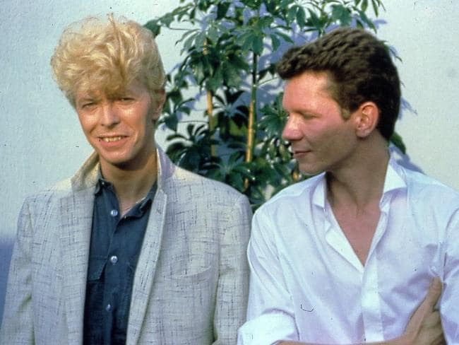

Blog

Weirdest Computer Fix Ever
2019-12-05
My laptop is pretty decent given that it only cost $1000 NZD,
but I've had an annoying mouse lag issue lately. I suspected
just about every program I run of causing this (for example,
Brave, Discord, and LBRY often showed high up on my top
output, but I couldn't really single one of these out in a
satisfying way. So I did what I probably should have done at
the beginning, and searched for my issue.
I searched for lagging mouse and found a post about a wireless
mouse, which matched my situation. The poster had fixed this
issue by plugging the little dongle receiver in via a hub or
USB extension cord instead of straight into the computer.
I tried this today, and it worked!
It's a pretty weird fix, but I'll take it. Now the mouse only
lags if the hard disk is getting thrashed, which is what I'd
expect to happen anyway.
Update: After a few days, I think this helped but didn't
totally solve the problem. I'm going to try other things as well.
Turning off bluetooth and muting my mic input device
seemed to make a bit of a difference (googling the issue
finds some people for whom the problem was audio software).
Three Views of Bayesian Inference
2019-11-10
In this post I will describe three two ways of looking at any given
Bayesian inference problem. The three ways are all mutually
compatible, but bring out different aspects of what is going on.
This is a very condensed version of what will ultimately be several
book chapters.
I call the first view the parameter space view.
This is the one most statisticians are used to, and focus
on the set of possible values of the parameter \(\theta\), i.e.,
the parameter space. In this view, a Bayesian update proceeds
when you take the prior \(\pi(\theta)\) and multiply it by
a likelihood function \(L(\theta)\), then re-normalise to
obtain the posterior distribution which is proportional to
\(\pi(\theta)L(\theta)\). This is the best viewpoint for
getting the job done, but not the best for understanding
the fundamental reasons why updating should be done this way.
The second view is the product space view, but that is
perhaps not the best term for it, since you don't always need
a product space. That's just the way to get from the parameter
space view (if you're used to it) to here.
Before knowing the data, not only do you not know the value
of \(\theta\), you also don't know the value of the data \(D\)
(thanks to Ariel Caticha for pointing this out to me).
Probabilities for statements about \(D\) are well-defined
via \(p(D | \theta)\). The probability distribution that
actually describes the prior uncertainty is the "joint prior":
$$p(\theta, D) = p(\theta)p(D|\theta)$$
which defines prior probabilities for statements like
"\(\theta\) is between 3 and 4 and \(D\) is either positive
or equal to \(-1\)". In a standard Bayesian setup, the
space over which probability distributions are assigned is
usually this product space — the set of possible
values of the pair \((\theta, D)\).
What does the update look like from this view? Trivial!
If the value of the data is found to be \(D_0\),
all other values of \(D\) are ruled out, and the posterior
is proportional to
$$p(\theta, D | D=D_0) \propto \left\{\begin{array}{lr}p(\theta, D), & D=D_0 \\ 0, & \textrm{otherwise.}\end{array}\right.$$
From this point of view, the Bayesian update is trivial
elimination. When you learn some statements are
false, set their probabilities to zero and renormalise.
If you then found the marginal posterior for \(\theta\),
you'd end up with the same result from the first view,
except now it's clear why the likelihood is the correct
modulating function (it's because the product rule is
used to set up the joint prior).
This update
also sets the probability of statements known to be true to 1,
in alignment with common sense.
This view is good for seeing (i) how trivial Bayesian updating
actually is, (ii) how reliant on prior information it is (you
better have prior dependence between \(\theta\) and \(D\) or
the latter won't tell you anything about the former),
(iii) how Approximate Bayesian Computation (which could
have been called 'product space sampling'), works; and (iv)
understanding how
Bayesian inference and Maximum Entropy are totally compatible.
This second view is also operative when there is no product
space present. For example, suppose \(\theta\) is a real number
and your prior is \(\pi(\theta)\). You then learn that
\(\theta\) is between two and five, so update to
$$p(\theta | \theta \in [2, 5]) \propto \left\{\begin{array}{lr}\frac{\pi(\theta)}{P_\pi(\theta \in [2, 5])}, & \theta \in [2, 5] \\ 0, & \textrm{otherwise.} \end{array}\right.$$
If you want to think of this as multiplication by a likelihood function
whose values are only ever zero or one, you can — and every other
Bayesian inference can be thought of like this as well.
The third view I was going to tell you about is the powerset
view, which is the set of all statements. This forms a structure
called a Boolean lattice, and it is good for understanding why
the rules of probability theory apply to both counting sets
and to degrees of implication. But I'll save that for another time.
Subscribe to my newsletter!
2019-10-24
I've started a newsletter and will be sending out the first
issue soon. The intended frequency is once per fortnight but
I might change that in the future depending on how things go.
The newsletter will cover any topics of interest to me (and hopefully
you). Please sign up
here
if you're interested. When you do this, you'll be sent a confirmation
email to click on. Please check your spam folder just in case!
I am considering archiving the newsletters
somewhere as well but I'm not 100% sure yet.
Edit: I will publish them
on my LBRY channel.
The first issue, which has already been sent out, is there now.
Some nice feedback on our latest cricket paper
2019-09-26
This afternoon I had my weekly meeting with PhD student
Ollie
Stevenson. It was a routine meeting where he showed me
what he'd been working on and we discussed a few issues
around it. Then he mentioned that our most recently submitted
paper had received some feedback. It was pretty good feedback!
Check this out:
Thanks, Nick! This was super pleasing to read.
I just hope the journal referees feel the same way, or at least
half as positively. But until
we hear back from them you can get the preprint
from the arxiv
or (why not) from
LBRY.
Rocking Lookup Tables in 2019
2019-08-20
Do people learn about lookup tables anymore? I don't know where
I picked them up from, but I have the impression that they are
an old-fashioned programming technique from the 1980s and 1990s.
However, I find myself using them all the time even though it's 2019.
I have no idea whether they're a good idea in languages like
Python or R, but I use them a lot in C++ and I should try them
in Haskell some time.
For example, in some work I'm doing at the moment, I am fitting
profiles to spectra of singers singing a single note. The spectra contain many
peaks, and some of the peaks look approximately Gaussian whereas
others look more like a Cauchy distribution. To capture these
different shapes, I'm using model functions that are proportional
to the density function of a Student t-distribution.
For a peak of amplitude 1 centered at position 0
with unit width and shape parameter \(\nu\), the functional
form is
$$f(x) = \left(1 + \frac{x^2}{\nu}\right)^{-\frac{1}{2}(\nu + 1)}.$$
The profile can be moved around using a location, scale, and
amplitude parameter.
Since I have to evaluate fifty of these (there are lots of peaks)
per MCMC iteration in my fit, it dominates the computational
cost. Things are much faster if I make a grid of \(x\)-values,
populated with evaluations of \(f(x)\) at the grid points.
I also have several arrays to cover a range of values of
\(\nu\). This happens once at the beginning of my run, and
if I want to evaluate \(f(x)\) for the billionth time,
I just figure out which
element of my pre-computed arrays is closest to the input
\(x\)-value and get the
corresponding \(f(x)\) value out
(actually I linearly interpolate from the two
grid points that my \(x\) falls between).
Here's the result of one of my fits. You can really see the
need for the \(t\)-like shape in the second harmonic.
The red curve comes from a continuum component I used which
had a very flexible prior, and the blue is the total model
curve after adding all the \(t\)-shaped harmonic peaks.
Click the image to enlarge.
Hygiene Theatre?
2019-08-12
This morning I bought a muffin from the convenience store on
campus. In front of the muffins there is a sign instructing us
to use the tongs to pick up a muffin, instead of our possibly
grotty hands. I didn't, though — I just grabbed a muffin
with my hands, disobeying the sign. Why would the tongs be
clean to touch? They're telling everyone to touch them!
Presumably someone could touch a muffin and then change their
mind and put it back, contaminated. The tongs would prevent
this, but then the same person would have touched the tongs.
I could be way off here, but is the whole tong ritual just
"hygiene theatre", similar to how many regard airport security
as "security theatre"? I don't know for sure, but I'm going to
continue not using the tongs.
Two singers and songs I've been enjoying
2019-08-08
On my old blog I occasionally posted songs that I'm into, for
no particular reason other than wanting to share them. I don't
know if anyone listened or liked those, but I thought I'd just
continue to do it anyway. So here are two of my recent favourites.
First, Universal Sound, by country singer-songwriter Tyler
Childers. I adore this song both technically and emotionally.
Second, Australian virtuoso singer Vanessa Amorosi (of Sydney Olympics/noughties
pop fame) covering Aretha Franklin and doing a
wonderful job of it. The guitarist with the funny hat is the guy
from Eurythmics. Also, in case you're curious about
Complete Vocal Technique lingo, most of what Amorosi is famous
for is using the edge mode higher in the range than most
singers do. One of the commenters called it an "upper chest belt"
which I suppose is the normal terminology for what she does when
everyone gets really impressed (or calls it screeching, as my
Nan would :)). Much of the earlier part of the song is in neutral.
Something worth doing once
2019-07-22
Attentive readers and/or stalkers may have noticed a recent
addition on the research page of this site: a paper accepted
for publication in Nature. This was an interesting collaboration
with my PhD supervisor Geraint Lewis, whom I visited last year.
We intended to work on two other projects but those didn't work
out. Instead, I ended up doing the Bayesian
model comparison for the hypothesis that there
are two rotational components in M31's
globular cluster population (distinguished by whether or not
the globalar cluster is associated with substructure or not)
vs. the hypothesis of
a single rotational component.
It was a reasonably straightforward inference problem from
my point of view, but with cool astronomical implications.
From a statistical point of view, it was a nice opportunity
to try applying John Skilling's advice to future-proof results
by presenting the marginal likelihood, so that future analyses
can be trivially compared to ours without having to re-do ours.
In addition to calculating the marginal likelihoods of six
different models, I also calculated the marginal likelihood of
the "top statement" \(\top\) of the whole paper, i.e.,
the logical disjunction of the six models, or the proposition
that one of these six models is correct. I hope to
make this a habit in future publications.
Getting a Nature paper is also a pretty nice thing
from a career point of view. Journals are a bit of an
anachronism and there are lots of well-worn complaints about
them, but they still function as a way of measuring the
status of a paper or a researcher with minimal time and
other transaction
costs. With Nature, you can also assess the results quickly
using the joke that anything published there is eventually
found to be incorrect.
I'm looking forward to someone figuring out a way
to replace journals (surely it is possible with the internet
and blockchains and such), but until then, this is satisfying to
have. Once the preprint is up I'll link to it. If you want
to check out my inference code for the project, it is available
here.
Busy again...
2019-07-06
It's been pretty quiet here since I've been busy again. Here
are the two main reasons:
That was about half of the total exam marking I recently did.
Once that was done, it was time to prepare for our daughter's
first birthday party :-)
Recently discovered tools
2019-06-21
In the last couple of months I've come across some pretty
cool new programs that I thought I'd tell you all about
(I know I have at least one reader — I got a really
nice email from a former student who reads the blog).
First, Zstandard.
It's a new-ish compression algorithm that was
developed by a guy at Facebook. It seems to have really good
properties, compressing both quickly and effectively —
way faster than bzip2 and with better compression than gzip.
I think you can use it with
tar but I haven't figured out how yet. You can always do it in
two steps though:
tar cvf myfile.tar mydir
zstd myfile.tar -o myfile.tar.zst
The command to unzip is a bit awkward: unzstd.
But the performance is so impressive I'm willing to overlook that!
The other thing I had to do recently was delete a Bitcoin wallet
from an old computer before getting rid of it. To do so, I
used srm
(secure rm), which does a bunch of fancy wiping to
make sure it can't be read even by someone hardcore. It's
very easy to use — you can just srm a file like you would
rm one, and it uses sane and intense defaults to make sure
it's not recoverable.
Some quotes used in my book draft
2019-06-09
I sometimes tell my graduate students that the most important
section of their dissertation is the acknowledgements. This
is because it will be
read by far more people than the rest, by a wide margin.
After the acknowledgements, the next most important part
is to put in some interesting or fun quotes at the beginning
of the chapters.
I really enjoyed choosing the quotes for my
PhD
thesis, and I'm enjoying doing it again for the
book I'm writing.
I thought I'd share a couple of the quotes here. There will be more!
James Clerk Maxwell:
The actual science of logic is conversant at present only with things either certain, impossible, or
entirely doubtful, none of which (fortunately) we have to reason on. Therefore the true logic for this
world is the calculus of Probabilities, which takes account of the magnitude of the probability which
is, or ought to be, in a reasonable man’s mind.
Kevin H. Knuth and John Skilling:
The set-based view is ontological in character and associated with Kolmogorov, while the logic-based
view is epistemological in character and associated with Cox.
A colleague who may or may not remain unnamed: Jaynes has too much MaxEnt shit in it
[BJB: I disagree with the colleague's dismissal of the subject].
C. S. Lewis: I doubt whether we are sufficiently attentive to the importance of elementary text books.
John Skilling: I think that the fundamentals of Bayesian analysis should be very simple and accessible to school
children.
Ariel Caticha: Before the data information is available, not only we do not know \(\theta\), we do not know \(D\) either.
Newman: But you remember this. When you control the mail, you control information.
I use that last one on my Dad a lot (he's a postman), but it
also works for the information theory chapter. I hope you
enjoyed these!
A new experience
2019-06-01
A month or two ago, Lianne and I bought a Yamaha MT-03 to help with commuting. It's
been really fun riding again, though of course I have plenty
of reasons for caution on the roads. Today I experienced a
hazard I've never encountered before, though — hail.
I had taken the bike to the North Shore for its first service.
It was clear weather when I left to head home, though the
CBD seemed to be covered in a dark cloud of doom as I
approached the harbour bridge. I didn't even get to the bridge
before I got hailed on, though. Luckily the hail was quite
small and didn't do any damage to me or the bike.
Funnily enough I think this was only the second worst riding
weather I've ever had. Back in Sydney around 2008 or so I
once had to pull over under an underpass on the M4 because I
was afraid of being struck by lightning. I stopped for about
half an hour before the lightning cleared up.
By the time I arrived home today, in true Auckland form, it was sunny
for about 10 minutes. Then it rained heavily. The one upside
is that this city knows how to make good rainbows (click
for high resolution):
How to support a file or channel on LBRY without spending anything
2019-06-01
As my loyal reader knows, I've been into LBRY for a while now after hearing
about it from economist Alex Tabarrok. It still has a ways to go to be fully featured
and get more adoption, but it's been a fun thing to learn about
and play with. Today I wanted to tell you about a cool feature that isn't supported
in the GUI app yet but can be done from the command line.
One of the fun things you can do in the app is send a tip to someone after (or before :))
watching or downloading their video or other file. Rather than going straight to the
publisher's wallet, the tip gets associated with the
item, which has a few benefits. First, the item will rank higher in search results,
and secondly, it means that the publisher's claim to the short URL of the item
(such as lbry://hello, as opposed to a full permanent URL such as
lbry://hello#b981513aeb8ff0394cc2d1d4aef6c1fa5177e24a)
gets stronger, in the sense
that someone would need to spend more in order to take over the short URL.
If the publisher does want to
spend the tip, it needs to be "unlocked" from the item and transferred into
the publisher's wallet.
Tips work fine in the GUI app already, but there's something even more cool that
you can do only from the command line at present. You can use some of your
credits to support someone else's channel or item without sending them a tip,
and in a way that can be easily reversed if you actually want to spend the LBC
or use it elsewhere.
A tip is a special case of something which is more generally called a "support" —
specifically, a tip is a support where you lose the LBC you tip and the publisher gains it.
The other kind of
support lets you put some of your LBC towards someone else's publication, but you
retain the right to withdraw it at any time, rather than giving that right
to the publisher.
To make one of these, first you need the unique identifier of the claim
(channel or published file), called the claim_id.
If you know the full
URL already, the claim_id
is just the part after the #. If you only
know the short URL, you can go to the command line and type something
like this
lbrynet resolve lbry://hello
and then look for the claim_id in the output. If the item is
inside a channel, you'll get the channel's claim_id in the
output too, so make sure you can tell which is which.
Once you know the claim_id, it's pretty easy to make a non-tip
support. Here's how I would do it for the hello example once
I knew the claim_id:
lbrynet support create --claim_id=b981513aeb8ff0394cc2d1d4aef6c1fa5177e24a --amount=10.0
If you wanted to create the support as a tip instead (like you
can do in the app), just pass an extra --tip option to the
command.
lbrynet support create --tip --claim_id=b981513aeb8ff0394cc2d1d4aef6c1fa5177e24a --amount=10.0
Obviously the amount can be changed depending on how much you
want to use. If you decide to abandon the support (i.e., withdraw
the LBC back to yourself), you don't need to use the command line —
the transaction appears in the app with a little trash icon next
to it which you can use to abandon the support:
Now that I know about this, there's little reason not to
deposit most of my credits against stuff I like! Better to have
them sitting there doing something cool as opposed to just
sitting there!
Busy busy busy
2019-05-29
The initial flurry of posts here may have implied that I would
be keeping up that rate long term. I can't promise that, but I
will try to post regularly still. Things have been pretty busy
with teaching STATS 731 for the first time (I always find it
hard to teach a course for the first time), and with Mackenzie
picking up viruses from daycare on a regular basis.
One thing I've done to 731 is to put in Nested Sampling and
more on model comparison. I've been emphasising it a lot.
If you're interested in that, you might enjoy
this tutorial problem
on the Jeffreys-Lindley
"paradox", which includes a diagram explaining it.
The Nested Sampling code to use is
here.
80s Australiana/Nostalgia
2019-05-16
When I lived in Australia, I never really paid much attention to
the popular pop/rock singers that Australia had produced.
I think I
thought of them (Jimmy Barnes, John Farnham et al)
as cheesy. But after
living in the USA for three years I became really nostalgic
for them, and this was boosted when I realised they were
excellent singers. They also fit into the eras of music
where most of my favourites are from — commonly known
as "dad music". I don't know why, but
I've always been a few decades
behind, except for when I liked some 90s artists in the
late 90s.
My latest "discovery" along the same lines, who I've known about
my whole life, is Iva Davies and Icehouse. I've been digging
the album Man of Colours. It sounds a lot like 80s-era
David Bowie (think "Let's Dance"), and I think they actually
toured together around that time:

Davies's vocals are often in the tenor range which I always find
exciting and challenging, and he provides more evidence that mullets
assist with this. Here's "Crazy",
which shows off the mullet and the harbour bridge. Iconic!
How many PewDiePies are there on LBRY?
2019-05-09
Answer: 36. That's 36 people who don't understand the LBRY
naming/URL system, which works using a form of auction that
provides no incentive to squatting. [edit: found the
easier explanation].
That's also 36 people who are going to be disappointed
if LBRY becomes popular and then find out their reward
for early-adopting and calling their channel @PewDiePie is
basically nothing.
For technical people, the command I ran to get that
was:
lbrynet claim list @pewdiepie | grep claim_id | wc -l
There'll be an upgrade soon where the relevant command will
change to:
lbrynet claim search @pewdiepie | grep claim_id | wc -l
Singing in other people's backyards
2019-05-09
A quote from statistician John Tukey that is a cliché for a
reason
is the best thing about being a statistician is that you get
to
play in everyone's backyard. Sometimes, other people invite
you
to their backyards,
like
geophysicist Mike Rowe did. Other times, you just invite
yourself
over.
The Complete
Vocal Institute was founded by
Cathrine Sadolin, who struggled to learn to sing
until she reinvented the field in a way
that made sense for herself. Singing teaching has historically
been a lot more of an art than a science, and her approach is a lot
more methodical than most. There are things you could critique
about it of course, but when I discovered it years ago it grabbed
my attention because it was the first time I'd seen someone
actually write down an explicit model for the things voices can do
and how to do each of those things. While the new me™️ is not
a rationalist, singing instruction needed more of that on the margin.
Actually connecting the model to practice was hard for me and it took
a long time, and the model has been revised over the years anyway
as they have been researching things and modifying it accordingly.
Speaking of research, I just emailed them a few weeks ago to register
myself as a fan of their work and a potential collaborator if they
need statistics, which it turns out they do! So I'm now looking
for a graduate student who's interested in vocals to work with me on
that. They have lots of data and there are still forms to sign, but
there should be lots of possibilities here! To be honest, there's some
chance it won't work out, but I am excited so felt the need to
write this and tell y'all about it.
Using STATS 220 skills in the wild
2019-05-06
One of the best and worst things about being an academic is
that sometimes you are assigned to teach a course about
something you aren't very good at, or in some cases, have
never learned at all. As long as you can keep ahead of the
students, it usually works out fine. I've been lucky so far
that this hasn't happened much, and when it has, I've been
grateful to have learned the new material.
One of the courses I've been teaching regularly for a few years
is STATS 220,
an introductory computing course for statistics students,
which teaches a bit of HTML, file formats, XML, SQL, and R.
The course is the brainchild of Paul
Murrell, but our previous
head of department wanted someone else to teach it so that more
than one person knows the course. I was happy to
do it since I like computing, and saying yes meant I was less
likely to ever have to teach frequentism.
When I started I knew a bit of HTML and R, and knew about
file formats, but had never touched XML or SQL. At first I
learned enough in order to teach the course, but not much more.
However, recently I've had occasion to actually use more of
this stuff in actual projects. For instance, this blog is written
in plain HTML, and STATS 220's little HTML/CSS section has
helped a fair bit so that I understand what I'm looking at when
I use HTML. Today I set up an RSS feed (see that little button at
the top of this page), which is secretly just an XML file, which
I hand-wrote based on this guide from W3Schools.
I've also recently enjoyed using SQL to query the LBRY
blockchain and plot things such as the amount various creators have received in tips
and the total
number of publications over time. Those were done using
simple SELECT commands as taught in STATS 220 — the
only slightly fancy stuff being (i) an INNER JOIN of a table
with itself, and (ii) figuring out how to submit the darned
query to their MySQL server and handle the results that come back.
See, students, some of this stuff is useful!
MaxEnt and homogeneity
2019-05-05
I'm a bit unusual among Bayesians in that I still think the principle of maximum entropy
is both true and (occasionally) useful, and that its critics have thrown out the
baby with the bathwater. One of the chapters of my upcoming book,
if I finish it, will be about this issue, and related ones such as where
MaxEnt constraints come from in the first place.
Some of the bad criticisms of MaxEnt focus on the fact that you can easily get
poor predictions from a MaxEnt distribution,
in an ex-post sense (i.e., a scoring rule could give
the MaxEnt distribution a worse score than some other distribution that
people might intuitively suggest). I don't know
why this would surprise anybody. Any broad prior, especially on a
high dimensional space,
is usually bad in this sense. MaxEnt does minimal updating
of probability distributions, and if you minimally update something
that doesn't perform that well according to an ex-post criterion,
you're likely to get something else that doesn't
perform that well with respect to the same criterion.
One interesting feature of MaxEnt distributions is that they often lead to
macroscopically homogenous predictions. For example, let \(\{x_i\}_{i=1}^N\)
be a batsman's
next \(N\) scores in cricket, so the set of possibilities is
\(S = \{0, 1, 2, 3, ...\}^N\). Starting with a flat prior over \(S\) and then
doing MaxEnt with an expected value constraint like
$$\left<\frac{1}{N}\sum_{i=1}^N x_i\right> = \mu,$$
gives a posterior distribution for the \(\{x_i\}\)
which is a product of iid geometrics with means
\(\mu\). If \(N\) is large, this implies a high posterior probability for the
sequence of scores looking macroscopically homogeneous, because the
constraint never put in any time-dependent information, and because
almost every element of \(S\) looks macroscopically homogenous.
Now, the actual sequence of scores \(\{x_i\}_{i=1}^N\)
may have a trend or whatever. That doesn't mean MaxEnt is invalid!
It still correctly updates the flat prior over \(S\) in a minimal
fashion, which is what it claims to do.
Most possible sequences (elements of \(S\))
look macroscopically flat, so MaxEnt predicts that.
Reality, being complicated,
happened to produce a sequence that was atypical in that
sense, but probably fairly typical in some other senses.
Lovely email received!
2019-05-01
This kind of thing makes my day:
Dear Prof. Brewer,
I work as a Data Science/ML professional in the US having done my grad study in Stats.
I came across your Bayesian Stats course you teach at University of Auckland. I must
say I have never found such a cogent and coherent text on Bayesian
Statistics ever.
Now I'm in a good mood. In related news, I've moved the
notes here
for online reading.
Conventions
for wide priors in JAGS/BUGS
2019-04-30
I'm currently preparing to teach STATS 731, the graduate
Bayesian course here.
My first lecture was meant to be today but
I had to cancel it due to hoarseness following a throat
infection. Anyway, the existing course materials use a lot
of the traditional (in statistics) wide priors, stuff like this
for a location and scale parameter respectively:
beta ~ dnorm(0, 1.0E-4)
tau ~ dgamma(0.001, 0.001)
var <- 1/tau
sig <- sqrt(var)
In the 1990s, it was important to choose conjugate priors
to speed up the MCMC sampling, and in many cases (e.g.
regression) stuff like this was appropriate. It still works
today, too. However, in my experience students find the choice
of a prior a bit mysterious, and these are more obscure than
they need to be. Who has an intuition for what that gamma
prior looks like — even for tau, let alone sig (the
coordinate that's usually more interpretable). Also, are we
really so sure beta is between -200 and 200? Probably depends
on the units of the problem.
In my lecture on Thursday I'm still going to use these priors
but I'm also going to (a) plot them, and (b) compare them
to uniform and log-uniform priors which they are fairly similar
to over a decent range of their parameter spaces. Hopefully this
will remove a bit of the shroud of mystery.
Talk
by Dallas Willard about worldviews
2019-04-30
I recently enjoyed
this excellent talk
by Dallas Willard, entitled The Nature and
Necessity of Worldviews. If you're familiar with
Jonathan Haidt's work, it strikes familiar notes,
but Willard's personal angle as a frustrated
Christian in the secular university comes through.
Regardless of what you think about issues of religion
(I'm undecided myself), 90% of the talk can be filed under
important things I didn't learn until my 30s, and can
be applied to a great deal of other issues.
If you don't have time for the whole thing, you can also
check out this brief clip.
Trying
out maths here
2019-04-29
When I moved my blog over here, I was a bit worried that I
wouldn't be able
to type \(\LaTeX\) anymore. But that's not the case! Thanks to
MathJax, I can now get equations
in here
very simply. Here are two of my favourites:
$$P(H \,|\, D, M) = \frac{P(H \,|\, M)P(D \,|\, H, M)}
{P(D \,|\, M)}$$
$$H\left(\boldsymbol{p}; \boldsymbol{q}\right)
= -\sum_i p_i \log (p_i/q_i)$$
While researching this, I also came across some PDF to HTML
converters. That sounds like a horrible idea, but some worked
a lot better than I thought. If you click on my CV at the
top right you'll get what looks like a PDF document but is
actually HTML! How cool.
Retiring
the Plausibility Theory blog
2019-04-28
The other day I bought a domain name for my website, which
was fun, and has motivated me to continue simplifying
my internet
life in a few ways. Over the last year or so I've successfully
reduced my social media usage by about 80%, and am now using
the internet like it's 1999 again (well, except for the
crypto
stuff).
It's been a pleasant experience, despite sounding
a bit hipster.
In addition, Wordpress has been annoying
lately with too many promotional emails and generally being
more complicated than I need.
Therefore, I've decided that I'll no longer be posting
at plausibilitytheory.wordpress.com. I'll leave it up so
people can still read it if they want, but in general, any
new posts will go straight to the blog page on
brendonbrewer.com.
{kind=link}
{kind=link}
{kind=link}
{kind=link}